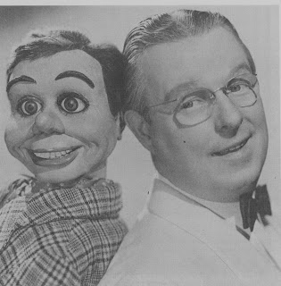
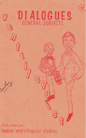

Book 17 Prize
11/23/2010
{kind=link}

{kind=link}

Published in 1974, this book contains four original comedy ventriloquist routines written by Fred Maher, founder of Maher School of Ventriloquism (1934). Each routine a full program. This Book has been out of print for many years, but thanks to Bob Abdou I have this copy for give-away. It has been used and the previous owner even marked some of his or her favorite jokes.
V: So you're a football player?
F: Oh sure, I play football.
V: Know much about the game?
F: Know as much as the COACH of our college knows.
V: Oh, now look - that's carrying it a little TOO far.
F: Well, it's the truth.
V: You know as much as the coach! How do you figure that?
F: Well, I do. He said so himself...he said it was IMPOSSIBLE for him to teach me ANYTHING!
Congratulations to Roy Hurlstone, winner of this book in today's drawing.
* * * * *
Mrs. Maher sold Fred's routines for $5-$35 each in the 1960's. That's approximately $35-$250 each in today's dollars! Can you imagine? And this book contains FOUR of those routines: Guys and Dolls (Dating, Marriage, In-laws, etc.); In A Doctor's Office (A complete act packed with laughs); College And Football (College comedy and football frustrations); Country Boy (Comical farm life and country living). I have four NEW MINT copies of this book for sale: $10.00 each postpaid. mahertalk@aol.com